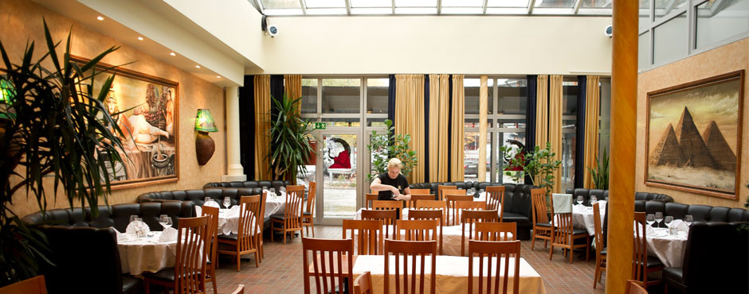

<<<<<<< Updated upstream
Bistro Amog
=======
Bistro Amog



>>>>>>> Stashed changes
Om oss
Vi är en passionerad resturang, hängiven att ge dig den bästa maten den här sidan av Mira HQ. Etablerat år 1963 har vi haft gott om tid att perfectionera vår skapelse och alla våra rätter är certifierade hood classics. Våran specialiter inkluderar "Kommunist Manipesto" och "Kokt TrappsTEG" samt många andra favoriter som du kan ta en titt på under "Vår mat".
Historia
Bistro Amog etablrades 1963 i Arjeplog tillsammans med våran syster-kedja Bistro imposter som lanserades i Skokloster. Redan då serverade vi våran mest ikoniska rätt "Kommunist Manipesto" som skapades av våran grundare Adolf Imposter för att "Demoralisera ryssen inför operation barbarossa". Några år senare tillkom även vårt berömda Långkokta TrappsTEG som bringar lycka till familjer ända till idag.
Historia
Bistro Amog etablrades 1963 i Arjeplog tillsammans med våran syster-kedja Bistro imposter som lanserades i Skokloster. Redan då serverade vi våran mest ikoniska rätt "Kommunist Manipesto" som skapades av våran grundare Adolf Imposter för att "Demoralisera ryssen inför operation barbarossa". Några år senare tillkom även vårt berömda Långkokta TrappsTEG som bringar lycka till familjer ända till idag.